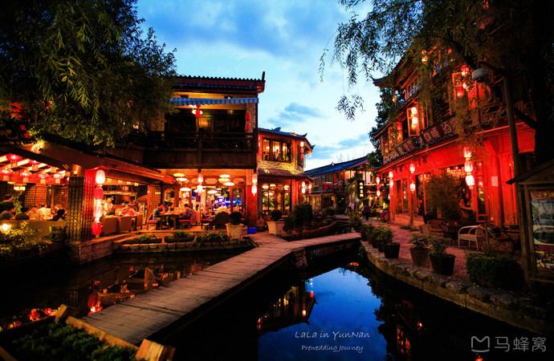

About
云南，简称云（滇），省会昆明，位于中国西南的边陲，是人类文明重要发祥地之一。生活在距今170万年前的云南元谋人，是截至2013年为止发现的中国和亚洲最早人类。战国时期，这里是滇族部落的生息之地。云南即“彩云之南”“七彩云南”，另一说法是因位于“云岭之南”而得名。面积39万平方千米，占全国面积4.11%，在全国各省级行政区中面积排名第8。总人口4596万（2010年），占全国人口3.35%，人口排名为第12名。下辖8个市、8个少数民族自治州。 与云南省相邻的省区有四川、贵州、广西、西藏。云南3个邻国是缅甸、老挝和越南。北回归线从该省南部横穿而过。云南历史文化悠久，自然风光绚丽，拥有丽江古城、三江并流、石林、哈尼梯田、大理古城、崇圣寺三塔、玉龙雪山、洱海、滇池、抚仙湖、梅里雪山、普达措国家公园、噶丹松赞林寺、西双版纳热带雨林等旅游景点。
DeliciousFood
云南菜以擅长烹制山珍、淡水鱼鲜和蔬菜见长，具有鲜嫩回甜，酸辣微麻， 重油味厚的特点，适合云南多民族人民的口味，自成一格，多姿多彩的地理风貌和干湿分明的立体气候，极其有利于动植物的生长，得天独厚的原料，为烹饪提供了丰富的来源。滇菜由昆明汇集三个区域菜的风味名菜组成，滇东北地区，烹调方法和口味相似川菜，滇西南和滇西地区，少数民族众多，除具少数民族风味外，还受清真菜的影响，具寺院菜风味，滇南地区，是云南汉族菜发源地。 云南名菜有汽锅鸡、砂锅鱼、腌牛筋、香茅草烧鸡、滕冲大救驾、酸笋煮鱼等，驰名中外。云南风味小吃过桥米线、云腿豆焖饭、蒸糕、烧饵块、丽江耙耙、酥油茶等，深受游客欢迎。